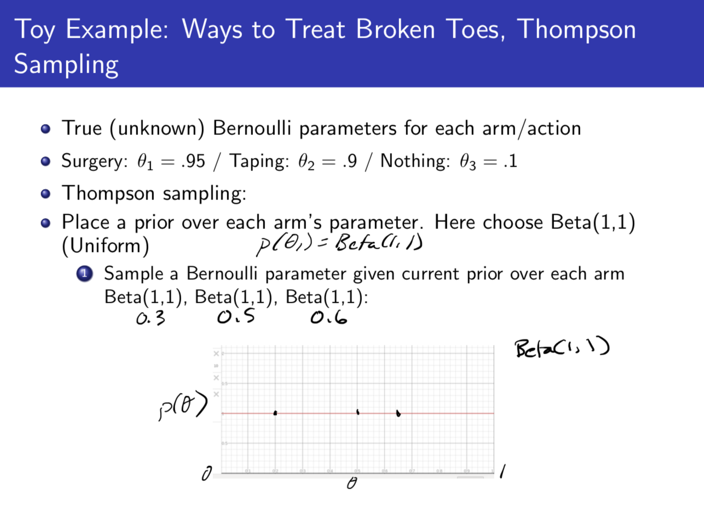
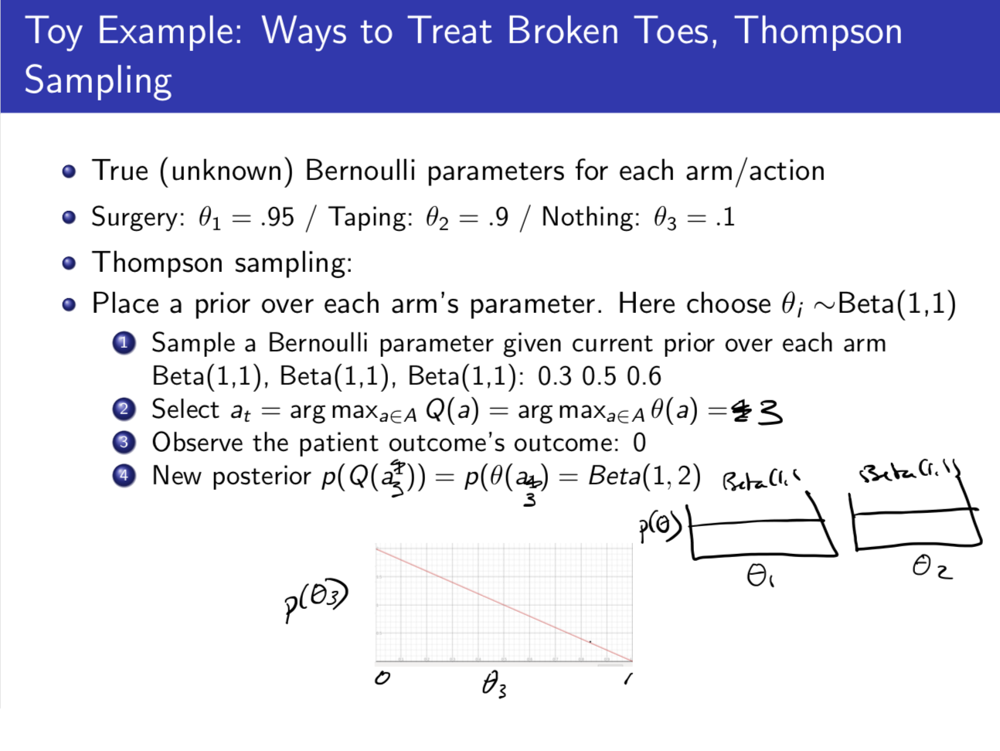
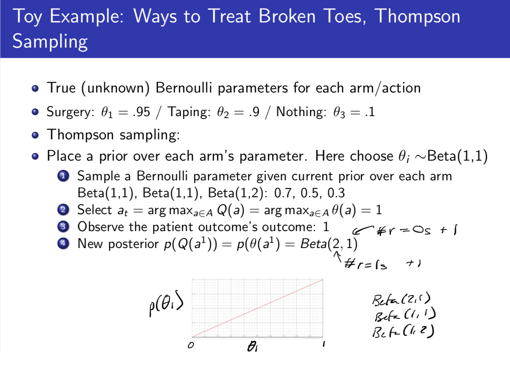
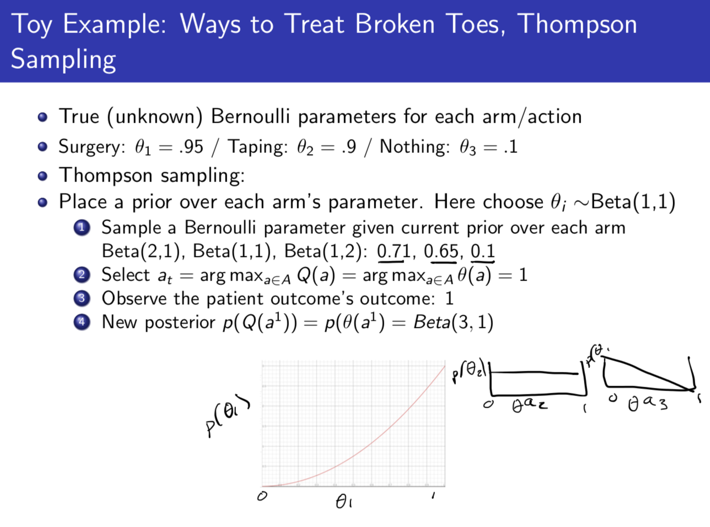

MAB is a MDP with only one state and no transition matrix.
MAB is a tuple of
At each time step
Goal: Maximize cumulative reward
Def: Action-value is the mean reward for action
Algorithms:
Low Bounds for Total Regret: The total regret will of course grow with the passage of time, but can we make it grow slower and slower (obtain sublinear total regret)?
The below theorem provides a lower bound (minimum) of the regret growth rate in terms of the gaps over all actions
Theorem: Asymptotic total regret is at least logatithnic in the number of timesteps (Lai and Robbins):
Upper Confidence Bounds:
Approach: Optimism in the face of uncertainty.
Evaluate an upper confidence
To generate our upper bound
Def: Upper confidence bound
Def: UCB1 Algorithm: At every time step, we choose the action
Suppose
Tthe probability that our UCB has underestimated the value of our optimal policy's value is less than the probability that the UCB bounds hold, which is bounded below by
So the probabilty that the UCB is indeed higher than the value of our optimal policy's value is at least
Now, assuming confidence bounds hold, we can upper bound the regret
This shows that if we use UCB, the rate that our regret grows is sublinear (is
using
1*: Here we divide the above sum into separate cases for each of the actions
2*: The sum is maximized when we pull all arms equally
3*:
Another Theorem: The UCB algorithm achieves logarithmic asymptotic total regret
So far we have made no assumptions about the reward distribution
Def Probability Matching: Select an action
For each action, we sample from our reward posterior (is probably totally wrong), we treat that as if it was right, and we pick the max action according to those samples.
Initialize a prior over each arm a, p(R_a)loopFor each arm a:Sample a reward distribution $R_a$ from posteriorCompute action-value function Q(a) = E[R_a]a_t = arg max_{a \in A} Q(a)Observe reward rUpdate posterior p(R_a|r) using Bayes Lawend loop
Thompson Sampling implements probaility matching. Example in Appendix 1.
Appendix 1: Thompson Sampling

Note that B(1,1) is uniform U(0,1). Starting off with an unintuitive prior will bias your distribution, but could be good if you have information about your distribution (a good prior is similar to having a good history of virtual actions).

Using the fact that the Beta distrbution is conjugate to the Bernoulli, and to update the Beta Prior analytically: If you see reward 1, just add 1 to your alphas in the Beta distrbution, if you see reward 0, just add 1 to your betas in the Beta distribution. The posteriors at time-step 1 is drawn in the above slide.


Thompson sampling: Exploiting faster once you see actions that are pretty good.
Thompson sampling achiees the Lai and Robbins Lower Bound; Bounds for optimism are tighter than for Thompson sampling. Empirically Tompson Sampling is very efective. Often start with Thompson Sampling if you have any prior idea about Reward distribution. Issue with UCB is UCB is too optimistic for too long. If you bumped into the door 1000 times, you will likely bump into the door again and no longer need to be optimistic about it. If you have a prior over rewards it could fix that. Thompson Sampling also has log regret growth like UCB.
Mixed Approaches - PAC-Bayesian Approaches: Bayesian update if your prior is very food, frequentist if your prior is wrong.
Thompson Sampling for News Article Recommendation (Chapelle and Li 2020) - Important paper. Thompson Sampling for Contextual Bandits. Thompson sampling did much better than UCB.